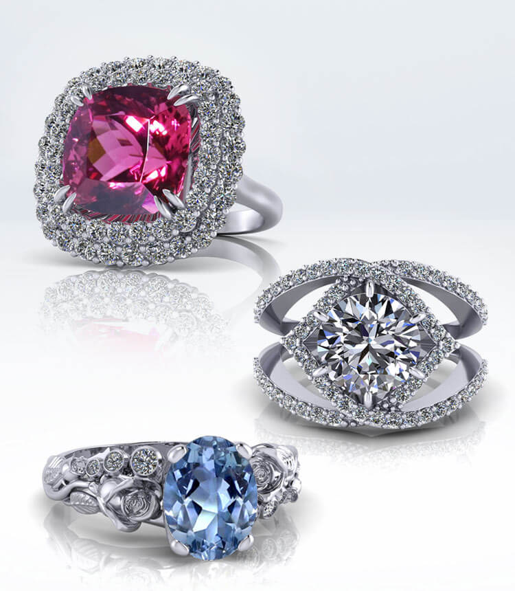
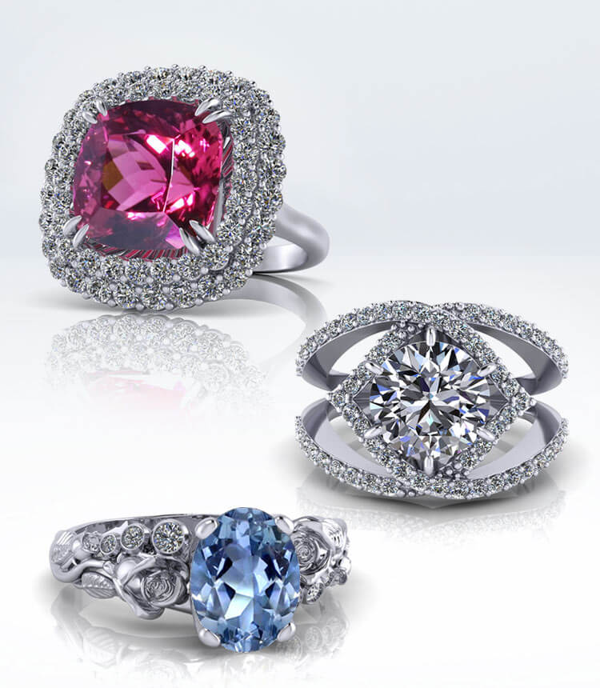

Ezekiel Lim
As a sociology for my major, my passion for understanding the complexities of society and the individuals within it has driven my educational and professional pursuits. I have always been fascinated by the ways in which social structures and systems influence human behavior and interactions, and how these structures can either create or perpetuate social inequality.
Throughout my academic career, I have taken courses that have provided me with a strong foundation in sociological theory, research methods, and data analysis. I have also been involved in various research projects, including a study on the effects of social media on self-esteem and body image among adolescent girls. Through these experiences, I have developed a keen eye for interpreting data and identifying patterns in social behavior.
Overall, my experience as a sociology major has provided me with a strong foundation in research methods and data analysis, as well as a deep understanding of the ways in which social structures and systems impact human behavior and interactions. Through my professional and personal pursuits, I am committed to utilizing this knowledge to promote social justice and create a more equitable society.
Experience
Part Time
• Worked in downtown for jewelry
• Experience in noodle shop
• Worked for translation in a community
Jewelry
• Designing the rings shapes
• Rhodium of different colors for accessories
Education
UC Riverside
Los Angeles City College
Palisades Charter
Portfolio


